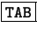

Una vez que está correctamente configurado (mediante el archivo /etc/lilo.conf), es necesario escribir el sector de arranque del dispositivo11.16.
Un error común es pensar que sólo editando el archivo se guarda la configuración, hay que recordar que es un archivo más, incluso se puede utilizar otro archivo.
Para grabar hay que ejecutar:
root@maquina:/root# lilo Adding linux * Adding windows root@maquina:/root#
Y listo. Si es que no surgió ningún problema.
El asterisco (*) indica que núcleo se cargará por defecto (default). En nuestro caso es la entrada que contiene label=linux.
La tecla  muestra todas las posibilidades de nucleos a cargar. Obviamente muestra el contenido de label.